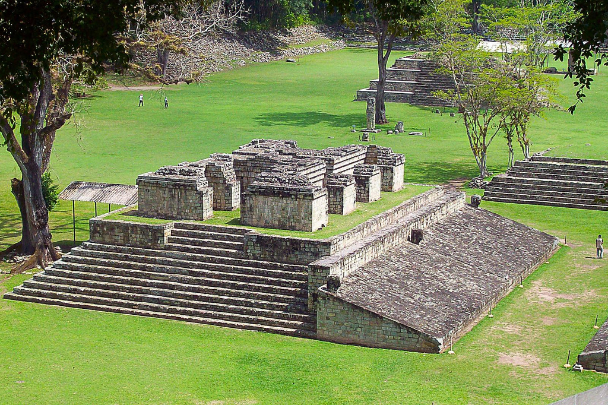
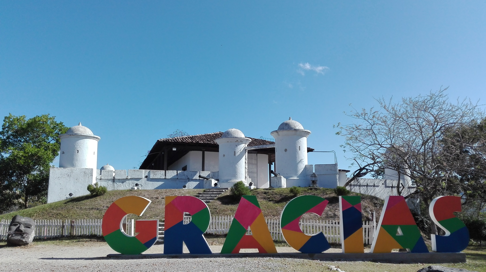
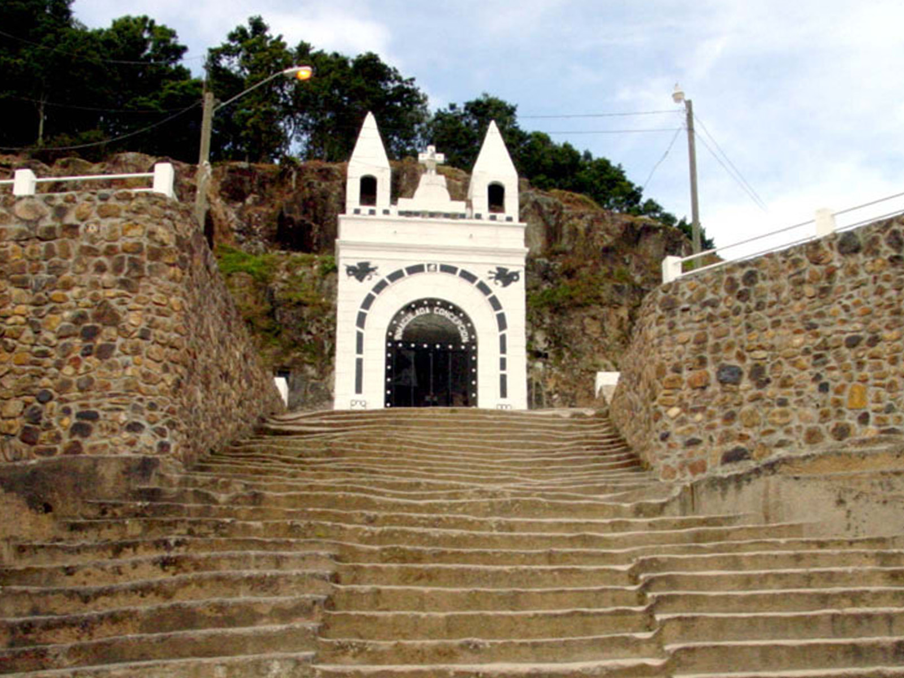
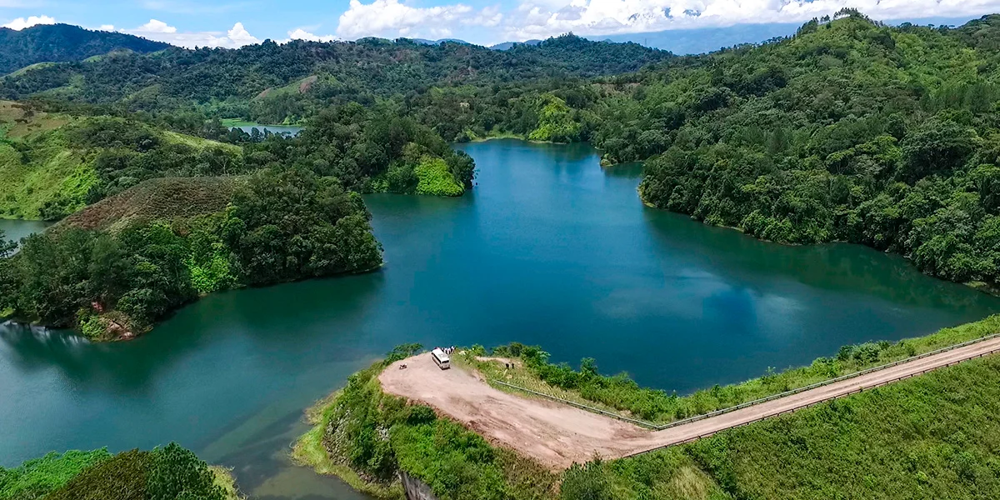
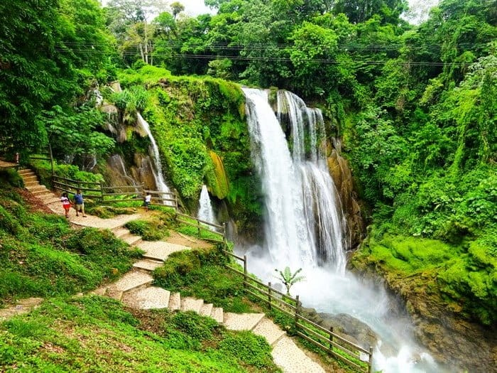

Conoce tu Tierra: cuatro rutas para recorrer nuestra historia, nuestras montañas y nuestro mar.
Elige tu ruta
Cada ruta reúne destinos con una identidad en común. Revisa la descripción de cada lugar, su nivel de dificultad de acceso y los tiempos de traslado estimados desde las principales ciudades del país.
Un viaje al occidente y centro del país para conocer el legado de la civilización maya y sus antiguos centros ceremoniales.
Parque Arqueológico de Copán Ruinas

Parque Arqueológico
Descripción física: Ciudad maya del período clásico ubicada en un valle rodeado de montañas, junto al río Copán, cerca de la frontera con Guatemala. Fue declarada Patrimonio de la Humanidad por la UNESCO.
Principales atractivos:
Escalinata de los Jeroglíficos
Gran Plaza y estelas esculpidas
Museo de Escultura Maya
Pueblo colonial de Copán Ruinas
Nivel de dificultad de acceso: Bajo. Carretera pavimentada hasta el pueblo y caminos señalizados dentro del parque.
Distancias, altitudes y tiempos de traslado hacia Copán Ruinas
Ciudad de origen
Altitud de la ciudad de origen (msnm)
Distancia por carretera (km)
Altitud del destino (msnm)
Tiempo estimado en vehículo
San Pedro Sula
80
175
700
3 h 30 min
Tegucigalpa
1200
409
700
7 h
Valores aproximados por carretera.
Parque Los Naranjos
Parque Los Naranjos
Descripción física: Sitio arqueológico a orillas del Lago de Yojoa, con montículos y plazas rodeados de senderos y vegetación. Combina historia antigua con naturaleza.
Principales atractivos:
Montículos y plazas ceremoniales
Senderos
Observación de aves
Vistas del Lago de Yojoa
Nivel de dificultad de acceso: Bajo. Se llega por la carretera principal entre Tegucigalpa y San Pedro Sula.
Distancias, altitudes y tiempos de traslado hacia Los Naranjos
Ciudad de origen
Altitud de la ciudad de origen (msnm)
Distancia por carretera (km)
Altitud del destino (msnm)
Tiempo estimado en vehículo
San Pedro Sula
80
73
650
1 h 30 min
Tegucigalpa
1200
190
650
3 h
Valores aproximados por carretera.
Ruta Lenca y Pueblos con Encanto
Un recorrido por el occidente montañoso, tierra del pueblo lenca, con pueblos coloniales, artesanías de barro y clima fresco.
Gracias, Lempira

Gracias, Lempira
Descripción física: Ciudad colonial al pie del Parque Nacional Montaña de Celaque, con calles empedradas, plazas e iglesias antiguas. Fue una de las primeras capitales de la región.
Principales atractivos:
Parque Nacional Montaña de Celaque
Fortaleza de San Cristóbal
Aguas termales cercanas
Centro histórico colonial
Nivel de dificultad de acceso: Medio. Carretera de montaña con curvas pronunciadas.
Distancias, altitudes y tiempos de traslado hacia Gracias
Ciudad de origen
Altitud de la ciudad de origen (msnm)
Distancia por carretera (km)
Altitud del destino (msnm)
Tiempo estimado en vehículo
San Pedro Sula
80
200
800
4 h
Tegucigalpa
1200
265
800
5 h
Valores aproximados por carretera.
La Esperanza e Intibucá

La Esperanza e Intibucá
Descripción física: Ciudades gemelas situadas en las tierras altas del occidente, con clima frío, bosques de pino y mercados donde se venden artesanías lencas.
Principales atractivos:
Mercado artesanal lenca
Cerámica y textiles tradicionales
Paisajes de montaña y bosque de pino
Gastronomía típica de la región
Nivel de dificultad de acceso: Medio. Carretera de montaña, con neblina frecuente por la mañana.
Distancias, altitudes y tiempos de traslado hacia La Esperanza
Ciudad de origen
Altitud de la ciudad de origen (msnm)
Distancia por carretera (km)
Altitud del destino (msnm)
Tiempo estimado en vehículo
San Pedro Sula
80
200
1,700
4 h 30 min
Tegucigalpa
1200
185
1,700
3 h 30 min
Valores aproximados por carretera.
Ruta del Lago de Yojoa y las Cascadas

Lago de Yojoa
Una ruta de agua y naturaleza en el centro-occidente, ideal para un viaje corto desde San Pedro Sula o Tegucigalpa.
Lago de Yojoa
Descripción física: El lago natural más grande del país, rodeado de montañas y fincas de café. Es un punto muy visitado por la observación de aves y por su gastronomía de pescado fresco.
Principales atractivos:
Paseos en lancha por el lago
Observación de aves
Fincas de café en los alrededores
Restaurantes con pescado frito a la orilla
Nivel de dificultad de acceso: Bajo. Está junto a la carretera principal.
Distancias, altitudes y tiempos de traslado hacia el Lago de Yojoa
Ciudad de origen
Altitud de la ciudad de origen (msnm)
Distancia por carretera (km)
Altitud del destino (msnm)
Tiempo estimado en vehículo
San Pedro Sula
80
90
650
1 h 30 min
Tegucigalpa
1200
200
650
3 h
Valores aproximados por carretera.
Cataratas de Pulhapanzak

Cataratas de Pulhapanzak
Descripción física: Cascada de unos 43 metros de altura formada por el río Amapa, rodeada de vegetación tropical. Se puede ver desde miradores y recorrer por senderos.
Principales atractivos:
Caída de agua principal
Senderos y miradores
Recorrido detrás de la cascada
Zona de descanso y áreas verdes
Nivel de dificultad de acceso: Bajo a medio. Camino corto desde la carretera y senderos con escalones húmedos.
Distancias, altitudes y tiempos de traslado hacia Pulhapanzak
Ciudad de origen
Altitud de la ciudad de origen (msnm)
Distancia por carretera (km)
Altitud del destino (msnm)
Tiempo estimado en vehículo
San Pedro Sula
80
65
500
1 h 15 min
Tegucigalpa
1200
185
500
3 h 15 min
Valores aproximados por carretera.
Ruta del Pacífico y Golfo de Fonseca
El sur del país, con clima cálido, playas tranquilas, islas volcánicas y atardeceres sobre el Océano Pacífico.
Isla del Tigre (Amapala)
Isla del Tigre (Amapala)
Descripción física: Isla volcánica en el Golfo de Fonseca, con el volcán Amapala en el centro y playas de arena oscura. Primero se llega por carretera hasta Coyolito y luego en lancha.
Principales atractivos:
Casco histórico de Amapala
Subida al volcán Amapala
Playa Grande y playas cercanas
Mariscos frescos
Nivel de dificultad de acceso: Medio. Requiere cruzar en lancha desde Coyolito (unos 20 minutos).
Distancias, altitudes y tiempos de traslado hacia Amapala
Ciudad de origen
Altitud de la ciudad de origen (msnm)
Distancia por carretera hasta Coyolito (km)
Altitud del destino (msnm)
Tiempo estimado en vehículo
Tegucigalpa
1200
130
5 en el puerto; 783 en el volcán
3 h más 20 min en lancha
San Pedro Sula
80
370
5 en el puerto; 783 en el volcán
6 h 30 min más 20 min en lancha
Valores aproximados por carretera.
Playa de Cedeño
Playa de Cedeño
Descripción física: Playa del Pacífico en el departamento de Choluteca, con arena oscura, oleaje moderado y un ambiente tranquilo de pueblo costero.
Principales atractivos:
Playa y atardeceres
Gastronomía de mariscos
Paseos en lancha por la costa
Ambiente familiar y tranquilo
Nivel de dificultad de acceso: Bajo a medio. Carretera pavimentada con un tramo final más angosto.
Distancias, altitudes y tiempos de traslado hacia Playa de Cedeño